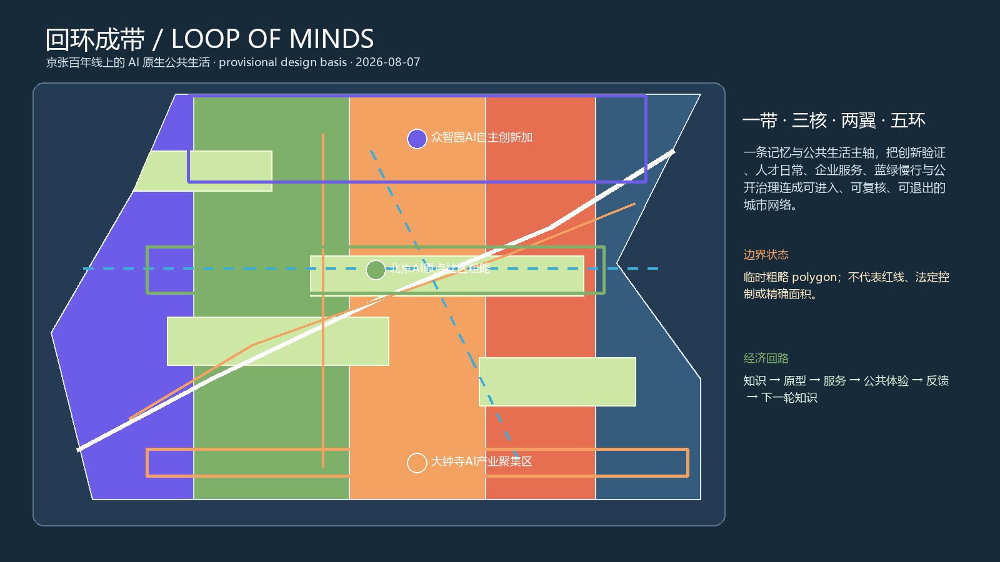
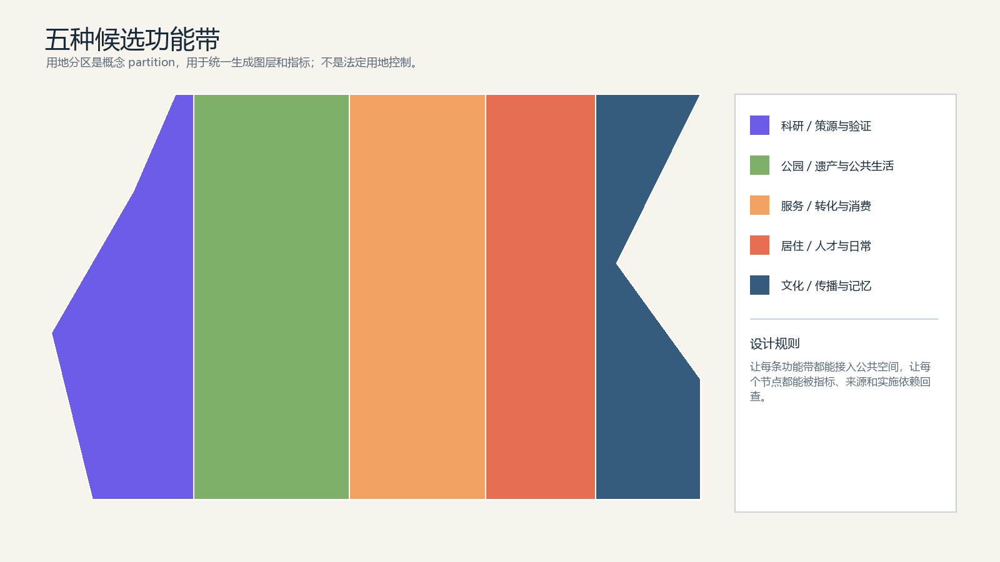
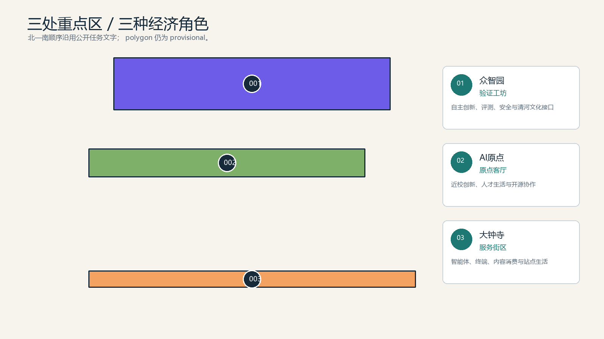
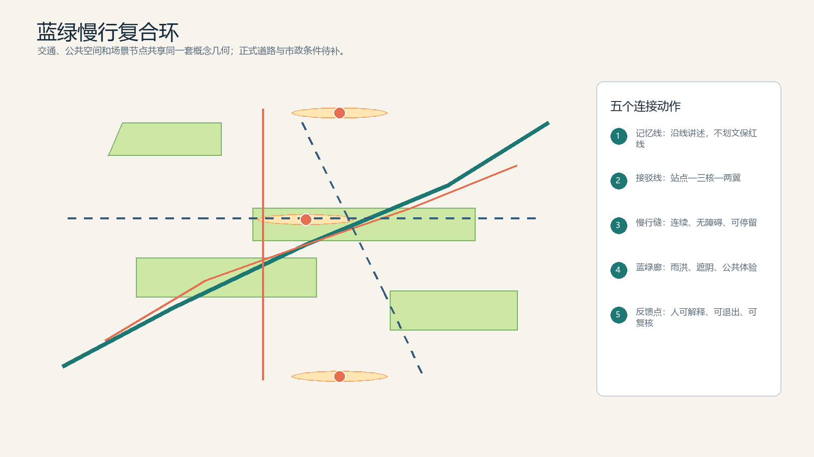
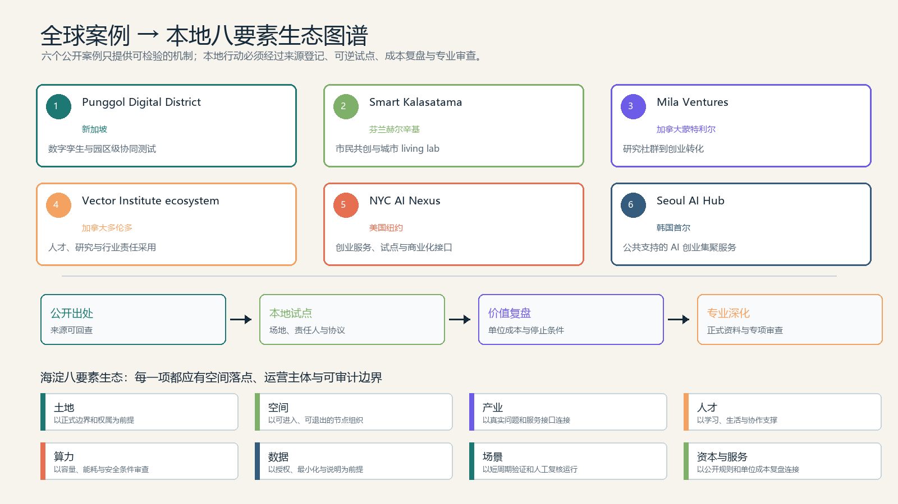
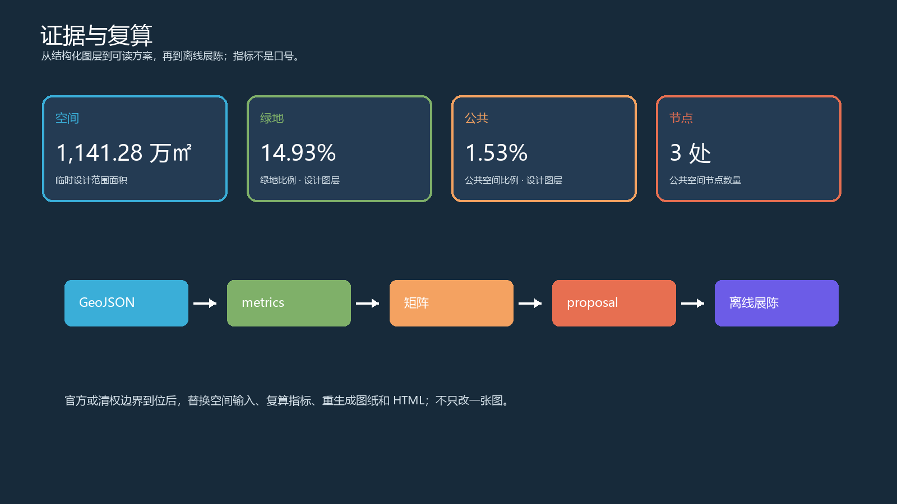

转化：在众智园先建立“场地责任人—试验协议—数据说明—退出复盘”的轻资产测试链。
不照搬：不移植其开发规模、地块强度、企业名单、设备参数或投资安排。总览地图 · 边界与证据状态
边界状态：临时设计几何：当前边界只用于概念生成、展示与收件自检，不是红线、法定控制或精确面积。官方或清权空间边界到位后需统一替换并复算。

三层范围 · 用地分区
统筹研究范围、总体设计范围、重点区域范围由同一组空间证据递进；用地分区是候选设计分区，不是法定控制。

重点区域 · 建筑与更新项目

建筑动作分为现状保留、保留更新和轻量新建；更新项目需要权属、控规和工程资料确认。
交通慢行 · 蓝绿公共空间

全球案例 · 本地生态图谱
六个案例均只作为公开方法观察；每一条转化动作都还要经过本地资料、责任主体、试点日志、单位成本和专业审查的验证。

转化：把慢行断点诊断和公共服务原型限定为有基线、有人工复核、有停止条件的短周期试点。
不照搬：不把其他城市的居民数据、治理规则、采购方式或试验结果视为海淀事实。转化：在 AI 原点社区设置可复用的研究—原型—展示—服务转化界面，并以公开准入规则管理。
不照搬：不承诺基金、企业投资、孵化名额或任何特定机构合作。转化：把人才训练、可信评测、企业服务和公共解释拆成可独立采购、可公开评估的服务模块。
不照搬：不引用其合作伙伴、经费、模型能力或采用效果为本地承诺。转化：在大钟寺把企业验证、场景展示、合规说明和活动路演组织为可计成本、可退出的服务包。
不照搬：不把其他城市的政策、品牌、场地条件或企业生态直接套用到本地。转化：为三处重点区建立统一的服务目录、预约入口、责任主体和年度复盘，而不是只增加展示空间。
不照搬：不复制其组织架构、补贴政策、场地规模或招商承诺。核心指标
读数说明：面积以“万㎡”主显示，比例以百分比显示，长度以公里显示，数量带中文单位。已复算值来自本包设计 GeoJSON；它们是透明度工具，不是法定规划指标。
总体设计范围面积已复算
1,141.28 万㎡当前临时设计范围的面积11,412,825.4 平方米 · 设计图层复算概念建筑基底面积已复算
32.13 万㎡本次设计图层中的建筑基底合计321,264.6 平方米 · 设计图层复算设计绿地面积已复算
170.34 万㎡设计图层中的绿地合计1,703,424.1 平方米 · 设计图层复算公共空间面积已复算
17.49 万㎡设计图层中的公共空间合计174,923.4 平方米 · 设计图层复算公共空间节点已复算
3 处设计图层中的公共空间节点数量结构化设计数量设计绿地比例已复算
14.93%绿地面积 ÷ 设计范围面积设计图层比例 · 非法定指标设计公共空间比例已复算
1.53%公共空间面积 ÷ 设计范围面积设计图层比例 · 非法定指标概念道路中心线已复算
29.21 km设计道路中心线长度合计29,207.2 米 · 中心线测量概念建筑数量已复算
11 栋本次设计图层的建筑基底数量结构化设计数量重点区域数量已复算
3 处任务书要求的三处重点区域结构化设计数量AI 场景卡已复算
10 张方案中可复核的场景卡数量结构化设计数量产业测试场景已复算
3 类可逆的行业验证场景数量结构化设计数量用户画像类别已复算
5 类方案覆盖的用户类别数量结构化设计数量全球生态案例已复算
6 个具名、可回查的全球 AI 创新生态案例数量结构化设计数量实施阶段已复算
3 期概念分期数量，不是投资承诺结构化设计数量容积率（FAR）待核
待正式资料官方边界、地块和强度资料尚未齐备需官方边界、地块和强度资料；不填猜测十张 AI 场景卡
每张卡都应有用户、空间、运营和边界；页面只展示概念入口，现场服务必须经过人工复核和退出演练。
成果发布、模型评测、开发者交流
公开内容；不收集非必要身份信息可逆测试、人工复核、退出机制
仅用授权测试数据；不直接做行政决定公开数据、人工核验、无障碍回路
诊断建议须由专业人员复核居住、学习、运动与日常服务
人工窗口兜底；不建立个人画像标准展示、可信评测、公众解释
公开评测方法；保留申诉和退出近校创新、路演、原型服务
合作关系以协议和采购为准终端、内容消费、数据说明
解释数据用途；不展示敏感数据端侧算力、能源与公共服务
设备容量和工程条件待核铁路文脉、中关村与 AI 新文化
文保边界和史料由专业团队确认开发者节、开放日、国际传播
活动需另行审批、招采和安全评估第一期 90 天 · 采用门槛
这不是建设批准，而是一组可逆试点的决策接口；三项测试都要留下基线、日志、反馈和停止记录。
确认正式或清权边界，选定一个可进入节点，完成权属、文保、交通、无障碍、隐私和安全筛查。
交付：边界替换包、步行与公共空间基线、责任人清单、数据与版权登记。门槛：任何一项关键筛查缺失，都不进入现场 AI 服务测试。在现有或可短期借用的空间运行慢行断点诊断、开放评测广场、企业服务客厅三项可逆测试。
交付：运行日志、匿名反馈、人工复核记录、退出演练、单位成本台账。门槛：三项测试都要有基线、人工复核和退出记录，且不得留下未处置的安全或隐私事件。由独立复核者比较公共价值、可复制性、运维负担和单位成本，决定扩展、修改或停止。
交付：公开复盘包、问题清单、可复用组件、下一期条件和停止建议。门槛：只有证据支持的组件才能进入下一期；长期建设必须另行取得正式规划和工程条件。经济效益路径 · 不虚构收入
价值路径需要现场报价、采购规则和责任分配验证；本页不把假设写成投资、产值或政府承诺。
可解释的慢行诊断、公共空间运营和 AI 场景评测
把一次性研究转成可验收的服务包，减少重复调研短周期场景测试、人工复核、标准说明和结果展示
让企业先用小成本验证，再决定是否扩大投入开发者活动、开放日、路演和公共展陈的组合运营
用可复用节点形成持续客流和合作接口，而非一次性地标投资公开协议、组件库、匿名化反馈模板和复盘资料
降低后续项目重新设计、采购和解释的成本人类采用条件
| 决策层级 | 当前判断 | 仍需补齐 |
|---|---|---|
| 提交开源概念包 | 可以 | 完成最终 hash、边界披露和人类审阅 |
| 授权一期现场试点 | 暂不能直接 | 正式或清权试点边界、场地负责人、询价和安全/隐私方案 |
| 纳入法定规划或工程 | 不能 | 控规、权属、文保、交通、市政、消防和专业审查资料 |
| 形成投资或长期运营承诺 | 不能 | 可审计的商业模型、采购路径、责任分配和独立风险评估 |
任务覆盖 · 自检状态
合规矩阵、标准矩阵、设计深度矩阵共同覆盖公告任务与 Agent 六项任务；确定性校验、空间复核、视觉复核和专业证据复核都必须保留记录。
确定性校验空间复核视觉复核专业复核来源 · 假设 · 复算链

来源
来源见 sources.json；临时边界、任务书和公开公告分级使用。
假设
假设见 assumptions.json；正式边界、权属、控规、文保、市政和工程资料到位后统一更新。
GeoJSON 为数据依据EPSG:4548 面积复算仅离线展示需人工审阅